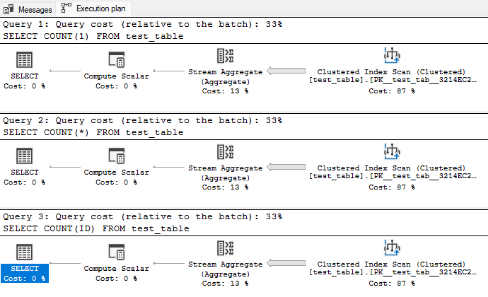
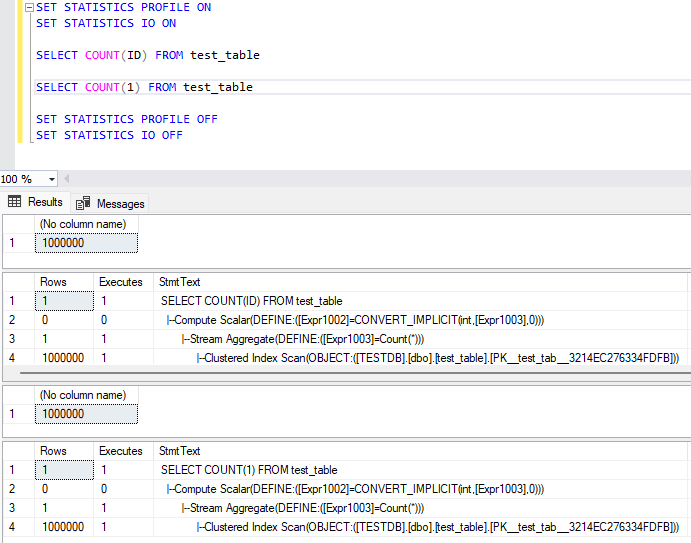
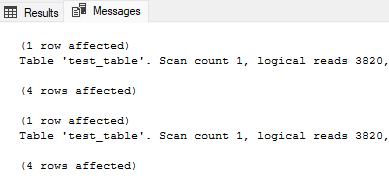
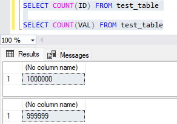
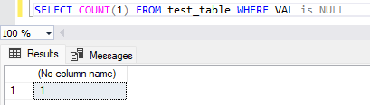

I created a 2-column-table containing 1.000.000 records. They are: ID (int PK) and VAL (nvarchar, nullable). Let's dive in!
COUNT(ID)
COUNT(ID), I mean the COUNT function on the PK column. Let's check if there's any difference in the execution plan between COUNT(ID), COUNT(1), and COUNT(*).
Execution Plan
We can see that all COUNT(1), COUNT(*), and COUNT(ID) are using the same execution plan. Because COUNT(1) and COUNT(*) are the same, we'll keep comparing COUNT(1) only to COUNT(ID). The next one is the query profile.
Query profile
Check the Line number 3 on each result, both queries are defined automatically to COUNT(*). How about I/O stats?
I/O Stats
Both queries scanned 3820 pages.
Here we have a conclusion that COUNT(1), COUNT(*), or COUNT(PK COLUMN) ARE THE SAME.
COUNT(COLUMN)
What if I try to use the COUNT function on a non-PK column? Let's check the result first.
Query result
Why the results are different? If you notice the VAL column data type and value, you'll see that the column is nullable. And there is 1 null value in that column.
Null value count
This issue makes COUNT(COLUMN) stand out. Because if you do not know whether a column is PK or not, nullable or not, it's very risky to count the table record amount based on a column. Using COUNT(fixed_value) or COUNT(*) is much more trustworthy.
But if you need to count NOT NULL values from a column, COUNT(COLUMN) is your best choice.